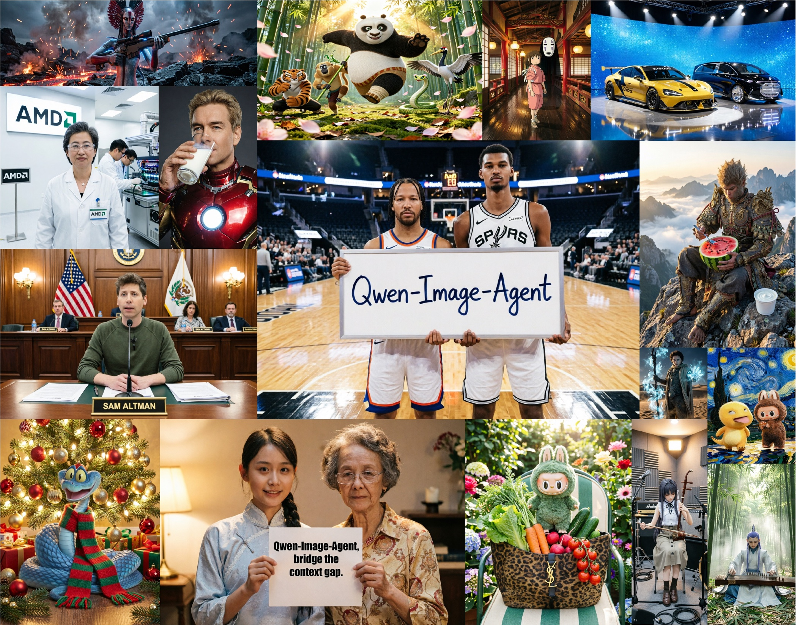
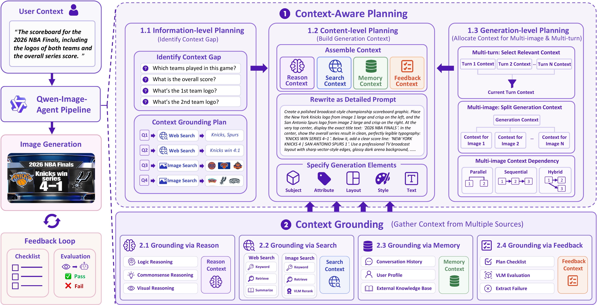
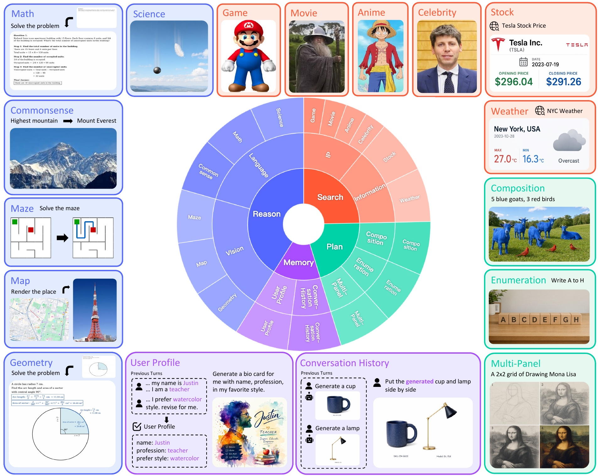
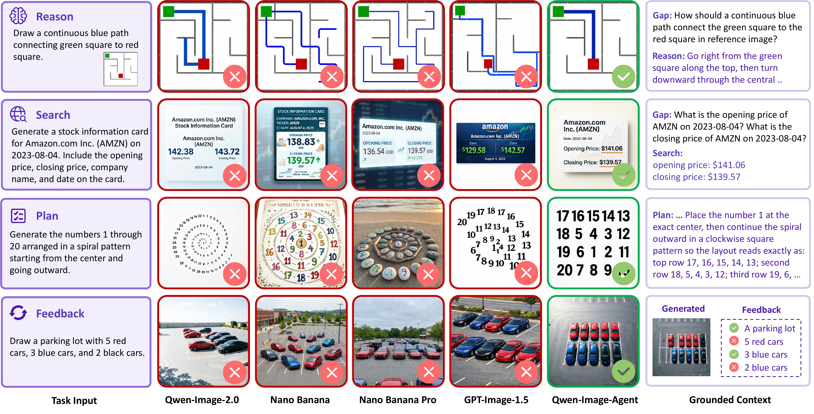

🎮 费曼一分钟
痛点：用户说「做张海报」往往缺细节——隐含意图、实时知识、历史对话。T2I 模型训练时吃「完整 prompt」，部署时吃「残缺 context」→ 作者称 Context Gap（用户 context ≠ 生成所需 context）。
Qwen-Image-Agent：training-free 统一 agent 框架，把 $p_{\mathrm{gen}}$ 当渲染器，先用 plan / reason / search / memory / feedback 补全 generation context，再调用 Qwen-Image-2.0 出图。
两模块：① Context-Aware Planning（信息级→内容级→生成级）；② Context Grounding（推理 / 网页+图像检索 / 记忆 / VLM 反馈闭环）。
评测：新 benchmark IA-Bench（Plan·Reason·Search·Memory，730 例 / 1801 checklist）。IA-score 45.4 vs 直连 Qwen-Image-2.0 的 17.4；WISE-Verified / MindBench 亦 SOTA。
Fig.1 · 无参考图的真实任务样例

Abstract
While text-to-image (T2I) models have achieved remarkable progress, they struggle with real-world requests that are often underspecified, implicit, or dependent on up-to-date knowledge. We identify this challenge as the Context Gap: the mismatch between the user context and the sufficient generation context for T2I models.
To bridge this gap, we propose Qwen-Image-Agent, a unified agentic framework that integrates plan, reason, search, memory and feedback in a context-centric manner. Qwen-Image-Agent treats user input as partial context and progressively constructs the generation context through Context-Aware Planning and Context Grounding.
To evaluate agentic image generation, we further introduce Image Agent Bench (IA-Bench), a benchmark covering four core image agent capabilities: Plan, Reason, Search, and Memory. Experiments on IA-Bench, Mindbench and WISE-Verified show that Qwen-Image-Agent outperforms strong baselines and achieves state-of-the-art performance.
尽管 T2I 模型进展显著，它们仍难以处理真实请求——这些请求常欠指定、含隐含信息或依赖最新知识。我们将此挑战定义为 Context Gap：用户 context 与 T2I 模型所需充分生成 context 之间的不匹配。
为弥合该差距，我们提出 Qwen-Image-Agent：以 context 为中心、整合 plan、reason、search、memory 与 feedback 的统一 agent 框架。它将用户输入视为部分 context，并通过 Context-Aware Planning 与 Context Grounding 逐步构建生成 context。
为评估 agentic 图像生成，我们进一步提出 IA-Bench，覆盖 Plan、Reason、Search、Memory 四类核心能力。在 IA-Bench、Mindbench 与 WISE-Verified 上的实验表明，Qwen-Image-Agent 优于强基线并达到 SOTA。
不是新 DiT，而是上下文工程 + 工具编排层；与 MindBrush / GenSearcher 等同赛道，但强调统一 context-centric 视角而非单点能力。
Introduction
As these systems move into real-world applications such as marketing, product design, and slide creation, they are increasingly expected to solve practical visual tasks rather than merely render prompts.
Despite their generative ability, current T2I models remain limited on real-world tasks. A key reason is a structural mismatch between training and deployment: models are optimized for fully specified prompts, while real-world requests are often underspecified. In practice, successful generation may require inferring implicit user intent, retrieving up-to-date knowledge or visual references from web, and incorporating interaction history.
We refer to this mismatch as the Context Gap: the gap between the provided user context and the generation context required for T2I models. This gap motivates a paradigm shift from traditional direct image generation to agentic image generation.
Recent work has explored components such as plan, reason, search and tool use, memory, and self feedback, but these efforts remain fragmented and do not provide a unified framework for context-centered generation.
当这些系统进入营销、产品设计、幻灯片制作等真实应用时，人们 increasingly 期望它们解决实际视觉任务，而非仅渲染 prompt。
尽管生成能力强，当前 T2I 在真实任务上仍受限。关键原因是训练与部署的结构错配：模型针对完整 prompt 优化，而真实请求常欠指定。实践中，成功生成可能需要推断隐含意图、从网络检索最新知识或视觉参考、并融入交互历史。
我们将此错配称为 Context Gap：所给用户 context 与 T2I 所需生成 context 之间的差距。该差距推动从直接图像生成向 agentic 图像生成的范式转变。
近期工作分别探索 plan、reason、search、memory、self feedback 等组件，但这些努力仍碎片化，未提供面向 context 的统一框架。
论文核心叙事：渲染能力 ≠ 任务完成能力。GenEval/DPG 测「画得像不像 prompt」；真实用户 prompt 本身就不完整——agent 价值在补 context，不在换更大 DiT。
Qwen-Image-2.0 是渲染后端；Agent 是外层 orchestrator。直连 2.0 在 IA-Bench 仅 17.4 分，说明 gap 主要在 context 侧。
Qwen-Image-Agent Framework
Fig.2 · 框架总览

We formalize image generation and edit as a conditional rendering problem. Given a user context $c_u=(P,I_{\mathrm{ref}})$ with prompt $P$ and optional reference images $I_{\mathrm{ref}}$, direct image generation renders output image $y$ in a single forward pass: $y \sim p_{\mathrm{gen}}(\cdot \mid c_u)$.
We distinguish user context $c_u$ from the generation context $c_g$, which denotes the complete context needed for successful rendering. Agentic image generation introduces a context-construction process: at each step $t$, the agent maintains state $s_t$, takes action $a_t$, and receives observation $o_t$, forming a trajectory $\tau=\{(s_t,a_t,o_t)\}_{t=1}^{T}$.
The action space consists of basic operations to gather context, including plan, reason, search, rewrite, and evaluate. The agentic generation process is: $p_{\mathrm{agent}}(y \mid c_u)=\sum_{\tau} p(\tau \mid c_u)\, p_{\mathrm{gen}}(y \mid c_g=c(\tau))$.
我们将图像生成与编辑形式化为条件渲染问题。给定用户 context $c_u=(P,I_{\mathrm{ref}})$（prompt $P$ 与可选参考图 $I_{\mathrm{ref}}$），直接生成在一次前向中渲染输出：$y \sim p_{\mathrm{gen}}(\cdot \mid c_u)$。
我们区分用户 context $c_u$ 与生成 context $c_g$（成功渲染所需的完整 context）。Agentic 生成引入 context 构建过程：每步 $t$ agent 维护状态 $s_t$、执行动作 $a_t$、获得观测 $o_t$，形成轨迹 $\tau=\{(s_t,a_t,o_t)\}_{t=1}^{T}$。
动作空间含 plan、reason、search、rewrite、evaluate 等 context 收集操作。Agentic 过程为：$p_{\mathrm{agent}}(y \mid c_u)=\sum_{\tau} p(\tau \mid c_u)\, p_{\mathrm{gen}}(y \mid c_g=c(\tau))$。
把生成器当条件渲染器：agent 负责采样轨迹 $\tau$ 以得到 $c_g$，再交给 $p_{\mathrm{gen}}$。training-free = 不微调 DiT，靠 MLLM + 工具链补 context。
flowchart TB
CU["User context c_u"] --> IL["Information-level Planning\n(gap → questions → route)"]
IL --> GR["Context Grounding"]
GR --> R["Reason"]
GR --> S["Search (web + image)"]
GR --> M["Memory"]
CL["Content-level Planning\n(rewrite detailed prompt)"] --> GEN["Qwen-Image-2.0 render"]
R --> CL
S --> CL
M --> CL
GEN --> FB["Feedback (VLM checklist)"]
FB --> CL
GL["Generation-level Planning\n(multi-turn / multi-image)"] --> IL
Context-Aware Planning operates at three levels: information-level planning identifies the context gap and routes questions to grounding strategies; content-level planning assembles grounded context and rewrites the user prompt into a detailed specification (subject, attributes, layout, style, textual elements); generation-level planning allocates context in multi-image and multi-turn scenarios.
Context Grounding collects context through reason, search, memory and feedback. Reasoning covers commonsense, logical, and visual reasoning via VLM. Search uses web search for factual knowledge and image search for visual references. Memory incorporates conversation history, user profiles, and external multimodal retrieval. Feedback plans a checklist, uses VLM to evaluate outputs, and refines prompts iteratively.
Context-Aware Planning 分三级：信息级规划识别 context gap 并将问题路由至 grounding 策略；内容级规划整合已 ground 的 context 并将用户 prompt 改写为详细规格（主体、属性、布局、风格、文字元素等）；生成级规划在 multi-image / multi-turn 场景分配 context。
Context Grounding 通过 reason、search、memory、feedback 收集 context。推理含常识、逻辑与视觉推理（VLM）。搜索用网页检索事实知识、图像检索视觉参考。记忆融合对话历史、用户画像与外部多模态检索。反馈先规划 checklist，VLM 评估生成结果，迭代 refine prompt。
信息级
「缺什么？去哪找？」— 显式 question + 路由到 reason/search。
内容级
「怎么写进最终 prompt？」— 把异构 context 合成可渲染规格。
生成级
多轮防 context 爆炸：相关性筛选历史；多图分配 parallel / sequential / hybrid 依赖。
Reason ↔ 隐含约束；Search ↔ 精确/动态事实 + IP 参考；Memory ↔ 跨轮一致；Feedback ↔ 计数/构图等可验证属性。消融 Tab.4 显示去掉任一路径对应维度崩盘。
IA-Bench
Fig.3 · IA-Bench 结构

IA-Bench covers four core capabilities: Plan, Reason, Search, and Memory. The benchmark consists of 4 tasks, 17 subtasks, 730 instances and 1801 evaluation checklist items.
Planning-driven tasks include Composition, Enumeration, and Multi-Panel. Reasoning-driven tasks include Math, Science, Commonsense, Maze, Map, and Geometry. Search-driven tasks cover IP-related entities (Game, Movie, Anime, Celebrity) and Information (Stock, Weather). Memory-driven tasks include User Profile and Conversation History.
We adopt checklist-based evaluation. Pass Rate (PR) requires all checklist items satisfied. Checklist Accuracy (CA) averages the proportion of satisfied items. IA-score = $0.3\times\mathrm{Plan}+0.3\times\mathrm{Reason}+0.3\times\mathrm{Search}+0.1\times\mathrm{Memory}$.
IA-Bench 覆盖 Plan、Reason、Search、Memory 四类核心能力，含 4 任务、17 子任务、730 实例与 1801 条 checklist。
Planning 类含 Composition、Enumeration、Multi-Panel；Reasoning 类含 Math、Science、Commonsense、Maze、Map、Geometry；Search 类含 IP（Game/Movie/Anime/Celebrity）与 Information（Stock/Weather）；Memory 类含 User Profile 与 Conversation History。
采用 checklist 评测。Pass Rate (PR) 要求全部 checklist 满足；Checklist Accuracy (CA) 为满足项比例均值。IA-score = $0.3\times\mathrm{Plan}+0.3\times\mathrm{Reason}+0.3\times\mathrm{Search}+0.1\times\mathrm{Memory}$。
GenEval/DPG → 渲染对齐；WISE/MindBench → 知识/推理单维；IA-Bench → agent 四能力正交评测，且 Memory 权重低 (0.1) 但 multi-turn 场景仍关键。
人工标注 + 过滤「靠预训练就能蒙对」的 IP；checklist 先 LLM 候选再人工审；Memory 任务用动态 checklist（依赖前几轮生成图）。
Experiments
We employ Qwen-Image-2.0 as the image generation and edit backbone, and GPT-5.5-0424 as the MLLM backbone. We utilize Google Search API for web and image search (limit 5 each), and Jina API for visited web pages. All agentic baselines use the same MLLM and generation backbone for fair comparison. Feedback loop allows up to 3 attempts on IA-Bench; feedback is disabled on WISE-Verified and MindBench.
On IA-Bench (Table 1), Qwen-Image-Agent achieves IA-score 45.4 with PR 45.3/43.7/46.1/49.0 on Plan/Reason/Search/Memory, outperforming MindBrush (30.2), SCOPE (30.9), and Qwen-Image-2.0 direct (17.4).
On WISE-Verified, Qwen-Image-Agent reaches Overall 0.9020, surpassing Nano Banana Pro (0.8760). On MindBench Overall, Qwen-Image-Agent achieves 0.42 vs Qwen-Image-2.0 0.23 (+82.6%).
我们以 Qwen-Image-2.0 为生成/编辑骨干，GPT-5.5-0424 为 MLLM 骨干；网页与图像搜索均用 Google Search API（各限 5 条），Jina API 处理访问页面。所有 agent 基线共用同一 MLLM 与生成骨干以保证公平。IA-Bench 上 feedback 最多 3 轮；WISE-Verified 与 MindBench 关闭 feedback。
IA-Bench（表 1）上 Qwen-Image-Agent IA-score 45.4，Plan/Reason/Search/Memory 的 PR 为 45.3/43.7/46.1/49.0，优于 MindBrush (30.2)、SCOPE (30.9) 与直连 Qwen-Image-2.0 (17.4)。
WISE-Verified 上 Overall 0.9020，超过 Nano Banana Pro (0.8760)。MindBench Overall 0.42 vs Qwen-Image-2.0 0.23（+82.6%）。
| Model | IA-score | Memory PR |
|---|---|---|
| Qwen-Image-Agent | 45.4 | 49.0 |
| Nano Banana Pro | 42.6 | 52.0 |
| MindBrush | 30.2 | 13.0 |
| Qwen-Image-2.0 | 17.4 | 11.0 |
Memory 维度闭源仍略优，但 agent 方法普遍弱于闭源 Memory；本文在 agent 类中 Memory 提升最大（49 vs MindBrush 13）。
Fig.4 · IA-Bench 定性对比

Ablation (Table 4): removing Reason drops Plan PR to 24.7 and Reason to 29.7; removing Search drops Search PR to 7.8; removing Memory drops Memory PR to 0.0; removing Feedback causes smaller drops (IA-score 42.1 vs 45.4). Replacing MLLM with Qwen-Plus/VL-Max drops IA-score to 27.8; replacing Gen backbone with Qwen-Image drops to 28.3.
消融（表 4）：去掉 Reason 使 Plan PR 降至 24.7、Reason 至 29.7；去掉 Search 使 Search PR 至 7.8；去掉 Memory 使 Memory PR 至 0.0；去掉 Feedback 降幅较小（IA-score 42.1 vs 45.4）。MLLM 换为 Qwen-Plus/VL-Max 则 IA-score 27.8；生成骨干换 Qwen-Image 则 28.3。
Search / Memory 对各自维度近乎必要；Reason 还拖累 Plan（枚举等隐含需求在推理阶段解出）。Feedback 增益有限 → 2.0 渲染已较强 + 通用 VLM checklist 信号弱。
⑤ 多轮 context 爆炸 → 相关性筛选；④ 过度 image search 伤质量；③ Reason/Search 边界靠「精确事实 vs 动态事实」规则；⑥ 全 pipeline 延迟/成本远高于单次生成（DAG 并行仅部分缓解）。
Conclusion
In this work, we identify the context gap as a central challenge in real-world image generation. To address it, we propose Qwen-Image-Agent, a unified agentic framework that integrates plan, reason, search, memory and feedback in a context-centric manner. We further introduce IA-Bench, a benchmark for systematically evaluating four core capabilities of agentic image generation: Plan, Reason, Search, and Memory.
本文将 context gap 认定为真实世界图像生成的核心挑战，提出以 context 为中心、整合 plan、reason、search、memory 与 feedback 的统一 agent 框架 Qwen-Image-Agent，并引入 IA-Bench 以系统评估 agentic 图像生成的 Plan、Reason、Search、Memory 四类核心能力。
① Context Gap 问题 framing；② 统一 agent pipeline；③ IA-Bench + VLM checklist 协议；④ 跨 IA / WISE / MindBench SOTA。未开源代码与 IA-Bench 数据是落地主要缺口。
📐 符号与术语
| 符号/术语 | 含义 |
|---|---|
| $c_u$ | 用户 context：prompt $P$ + 可选参考图 $I_{\mathrm{ref}}$ |
| $c_g$ | 生成 context：成功渲染所需的完整条件 |
| $p_{\mathrm{gen}}$ | 图像生成/编辑模型（默认 Qwen-Image-2.0） |
| $\tau$ | Agent 轨迹：plan / reason / search / rewrite / evaluate 序列 |
| PR / CA | Pass Rate / Checklist Accuracy（IA-Bench 指标） |
| IA-score | Plan·Reason·Search·Memory 加权综合（0.3/0.3/0.3/0.1） |
| Context Gap | 用户所给 context 与渲染所需 context 之间的结构性缺口 |
🗺️ 论证总览
↓
Agent = context 构建器 + DiT 渲染器（Eq.1→3）
↓
Planning 三级 × Grounding 四路（reason/search/memory/feedback）
↓
IA-Bench 四能力正交评测（730 / 1801 checklist）
↓
Tab.1 IA-score 45.4 · WISE 0.902 · MindBench +82.6% · 消融验证各 context 必要
🧩 结构化十问（AI 解构）
Q1 · 这篇论文要解决什么问题？
Q2 · 核心创新点是什么？
Q3 · 与 MindBrush / GenSearcher / GEMS 有何不同？
Q4 · 「Planning 三级」各做什么？
Q5 · Reason 与 Search 如何分工？
Q6 · IA-Bench 怎么评？可靠吗？
Q7 · 实验设置公平吗？
Q8 · 消融说明什么？
Q9 · 定性样例证明了什么？
Q10 · 复现/落地还要什么？
🔬 深挖
Context Gap vs Prompt Engineering
手工扩 prompt 只能覆盖静态模板；agent 管线动态决定「要不要搜、搜什么、记什么」——差别在决策边界可学习/可规则化，而非更长字符串。
Memory 49% 仍低于闭源 52% 的含义
说明 multi-turn 一致仍是全行业瓶颈；本文 relevance-based 筛选缓解 token 爆炸，但未解决「长期 persona 漂移」——未来或需专用 memory 模块训练。
批判性思维 · 开放问题
- 闭源栈：GPT-5.5 + Google Search 使社区难复现 SOTA 数字。
- Feedback 天花板：prompt 级 VLM checklist 难覆盖细粒度美学；论文亦承认 task-specific reward 更优。
- Image search 悖论：需要参考时检索有益，过度检索引入编辑模型脆弱性——与 Gen backbone IP 能力耦合。
- IA-Bench 泄漏：过滤 iconic IP 但仍可能靠 MLLM 参数知识「假 search」——需 tool-call 日志审计。
- 商业路径：training-free 利于快速叠 Qwen 生态，但 latency 阻碍实时交互场景。